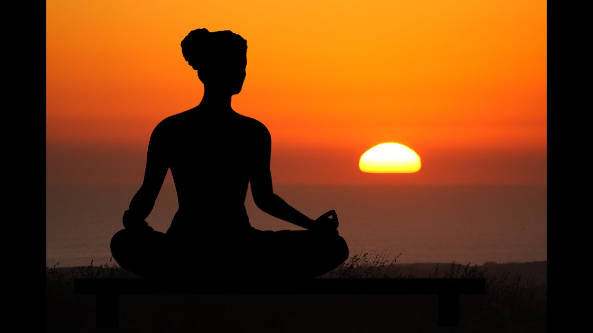

पद्मासना(Padmasana)
The word पद्मासना(Padmasana) is a Sanskrit word which signifies “lotus blossom” so it’s otherwise called the “Lotus posture“. It is alleged in light of the lotus-like development which made by our legs amid this asana. Another name of Padmasana is “kamalasana” The word Kamal is a hindi word which implies a lotus bloom. It is a yogic exercise in which one crosses the legs while keeping up a straight stance. It is a critical position for contemplation. Padamam implies Lotus and asana shows the posture which thusly demonstrates sitting in a position with no development. It’s imperative to be ready and be cognizant while doing any asanas, and your mind must be casual and think while honing yoga.
How to do Padmasana (Lotus Pose) ?
Sit on the floor and extend your legs, your legs ought to be straight in front.Hold the correct leg in both the hands, overlay the legs gradually and put it to your left side thigh.
Guarantee that your feet should touch your navel.
Same like prior overlap the left knee, and hold it with the two hands and place it on the correct thigh near the other.
Now your the two knees should touch the floor and the foot should confront upwardly.
Your spinal string ought to be directly now.
On the off chance that you feel some trouble while sitting in the stance for quite a while, you can change the legs and after that sit on a similar position.
Your spinal string ought to be erect, your the two hands ought to be as one or put the palms confronting upside on the knee joints and the thumb must touch your forefinger and alternate fingers should confront the upward
Breathing procedure ought to be gradually – gradually and profoundly.
(Inhale and Exhale) and concentrate on your relaxing.
Do this asana for 2 to 3 minutes in the first place organize, once you are utilized to it at that point increment the time 15 to 30 minutes.
Keep in mind one most critical thing don’t twist our body or head while doing this asana.
Benefits of Padmasana
1) Padmasana is the very favored asanas by yoga professional first and foremost stage for increment the concentration of psyche and fixation.2) It helps in enhancing the focus power and it will quiets the mind too.
3) This Asana jelly imperative liquids in the body and counteracts stomach illnesses and female issue associated with the regenerative organs.
4) Doing lotus pose gives your mind peace, isolation and life span to the expert. It expands the hungry and unwinds the body.
5) It can likewise helps in the extends the lower leg and knees.
6) This asana is the base for all asanas and it fortifies the hip and knee joints of the female and can get effortless tranquil personality. You can lessen the undesirable fat of hip and the thigh.
7) This is the least complex and most straightforward asana which can rehearse by all the age gathering of men and ladies they can get advantages of yogasana.